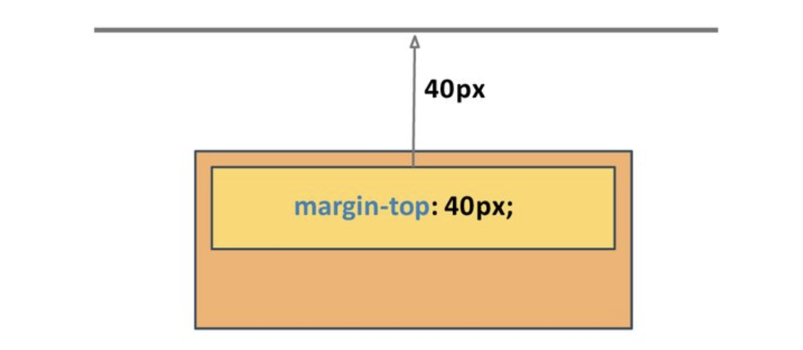

В геометрії елемента є 4 сторони: верх (top), право (right), низ (bottom) і ліво (left). Саме в такому порядку за годинниковою стрілкою, починаючи зверху, задаються значення збірних властивостей padding, margin і border.
Властивість padding

Збірна властивість контролює внутрішні поля між контентом і рамкою для усіх сторін елемента. Результат роботи залежить від кількості значень властивості.
/* Однакові поля по 20px з усіх сторін */ padding: 20px; /* Поля зверху і знизу по 10px, зліва і справа по 20px */ padding: 10px 20px; /* Поле зверху 10px, зліва і справа по 20px, знизу 5px */ padding: 10px 20px 5px; /* Поле зверху 10px, справа 15px, знизу 20px, зліва 25px */ padding: 10px 15px 20px 25px;
Також існують властивості для встановлення полів кожної сторони окремо.
padding-top: 20px; padding-right: 10px; padding-bottom: 15px; padding-left: 30px;
Поля (падінги) використовуються для декоративних ефектів. Наприклад, для створення вільного простору між рамкою елемента і його контентом, як в прикладі. Якщо не поставити падінг, то текст буде негарно прилягати до межі абзацу.
See the Pen lesson-05-padding by goit-academy (@goit-academy) on CodePen.
Корисно: У прикладі властивості рамки не вказані явно, але вона все одно є. За замовчуванням її ширина дорівнює 0px і вона бере участь в побудові геометрії елемента, тому можна задати поле між нею і контентом.
Властивість margin
Збірна властивість контролює зовнішні відступи від рамки для всіх сторін елемента. Результат роботи залежить від кількості значень властивості.
/* Однакові відступи по 20px з усіх сторін */ margin: 20px; /* Відступ зверху і знизу по 10px, зліва і справа по 20px */ margin: 10px 20px; /* Відступ зверху 10px, зліва і справа по 20px, знизу 5px */ margin: 10px 20px 5px; /* Відступ зверху 10px, справа 15px, знизу 20px, зліва 25px */ margin: 10px 15px 20px 25px;
Також існують властивості для встановлення відступів кожної сторони окремо.
margin-top: 20px; margin-right: 10px; margin-bottom: 15px; margin-left: 30px;
Зовнішні відступи використовуються для створення проміжку між двома сусідніми елементами. У прикладі у кожного елемента картки є різнокольорова рамка, тому видно, що між ними є відступи.
See the Pen lesson-05-margin by goit-academy (@goit-academy) on CodePen.
Увага: Під час використання падінгів для створення проміжків, елементи будуть щільно прилягати один до одного рамками без проміжку. Якщо в елемента не заданий колір рамки або фону, візуально визначити чи правильно зроблені відступи - неможливо, потрібно відкривати інструменти розробника.

Властивість padding відокремлює контент від межі елемента, а margin створює проміжки між сусідніми елементами. В цьому і полягає різниця.
Схлопування вертикальних відступів
Вертикальні відступи сусідніх блокових елементів не додаються, а вибирається найбільший з двох. Схлопування відступів виконується тільки для блокових елементів у нормальному потоці документа.

<div class="box top"></div>
<div class="box bottom"></div>
Задамо верхньому блокові нижній відступ 20px, а нижньому блокові верхній відступ 40px. Внаслідок схлопування, відступ між ними буде 40px, тому що вибирається більший з двох.
.box {
width: 200px;
height: 100px;
}
.top {
margin-bottom: 20px;
background-color: teal;
}
.bottom {
margin-top: 40px;
background-color: palevioletred;
}
Випадання вертикальних відступів
Вертикальний відступ вкладеного блоку випадає з батьківського і відштовхує обох від сусіда. Якщо у батьківського елемента також був заданий верхній відступ, то вибереться найбільше зі значень.
<div class="outer-box">
<div class="inner-box"></div>
</div>
У прикладі ми задаємо верхній відступ 40px для div.inner-box, а в результаті відсунеться не він сам від верху div.outer-box, а весь div.outer-box - від краю екрану.
.outer-box {
width: 200px;
height: 200px;
background-color: teal;
}
.inner-box {
width: 100px;
height: 100px;
margin-top: 40px;
background-color: palevioletred;
}
Увага: Верхні і нижні відступи на межі зіткнення з блоком-батьком немов пробивають його і випадають назовні - це одна з найчастіших помилок верстки. Робіть відступи тільки між двома сусідніми елементами.
Властивість border

Збірна властивість контролює ширину, стиль і колір рамки (межі) елемента.
border: ширина стиль колір;
Також існують властивості для того, щоб задати ці значення окремо.
border-width: ширина; border-style: стиль; border-color: колір;
Існує багато стилів рамок, найпопулярніші значення - це solid, dashed і dotted.
.box {
width: 100px;
height: 100px;
border: 5px solid tomato;
}
Індивідуальні рамки
Можна задати індивідуальні стилі рамці з кожної сторони елемента. Формат імені властивості простий - border-сторона-властивість: значення.
.box {
/* Встановить стилі верхньої рамки */
border-top-width: 3px;
border-top-style: solid;
border-top-color: blue;
/* Встановить стилі правої рамки */
border-right-width: 5px;
border-right-style: dotted;
border-right-color: black;
/* Встановить стилі нижньої рамки */
border-bottom-width: 7px;
border-bottom-style: dashed;
border-bottom-color: palevioletred;
/* Встановить стилі лівої рамки */
border-left-width: 9px;
border-left-style: dashed;
border-left-color: green;
}
Закруглена рамка
Для того щоб закруглити всі кути рамки, існує збірна властивість border-radius. Значенням можуть бути як абсолютні, так і відносні одиниці.
See the Pen lesson-05-border-radius by goit-academy (@goit-academy) on CodePen.
Наступні властивості дозволяють закруглити кожен кут рамки окремо.
/* верхній лівий кут */ border-top-left-radius: значення; /* верхній правий кут */ border-top-right-radius: значення; /* нижній правий кут */ border-bottom-right-radius: значення; /* нижній лівий кут */ border-bottom-left-radius: значення;